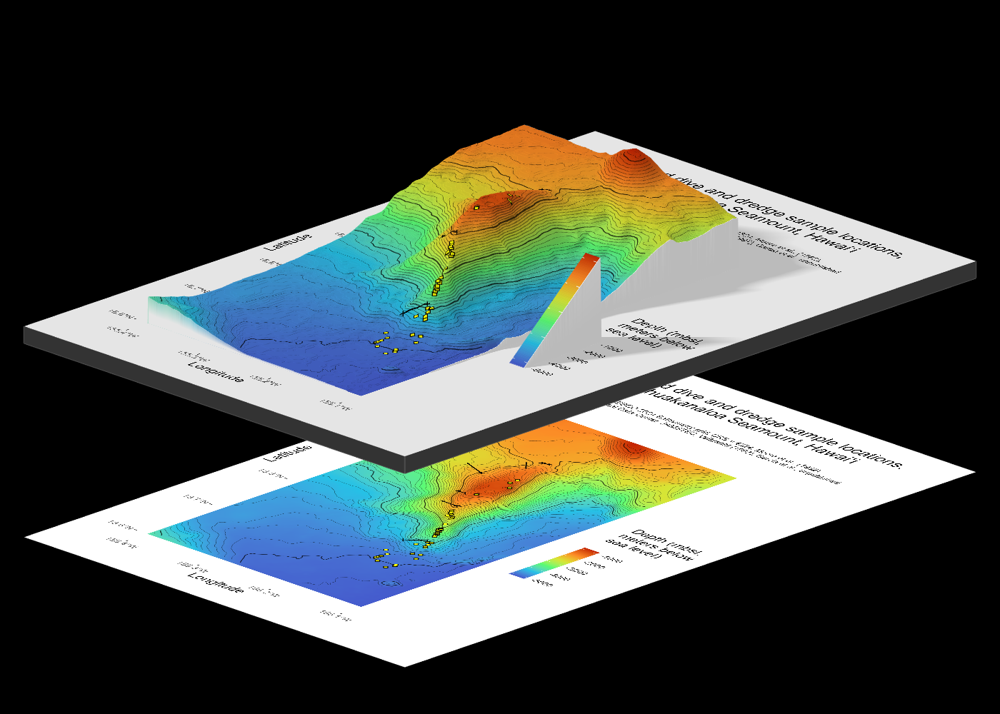
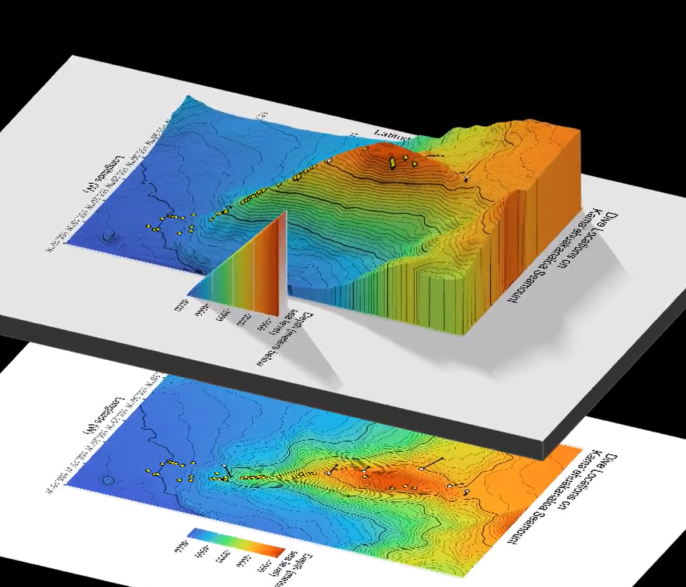
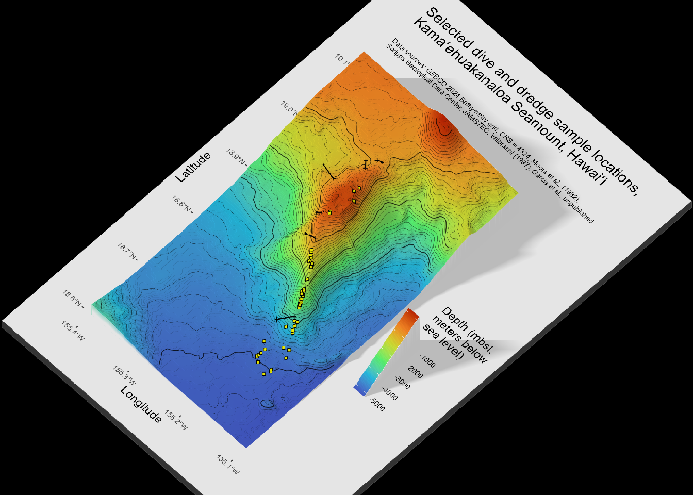
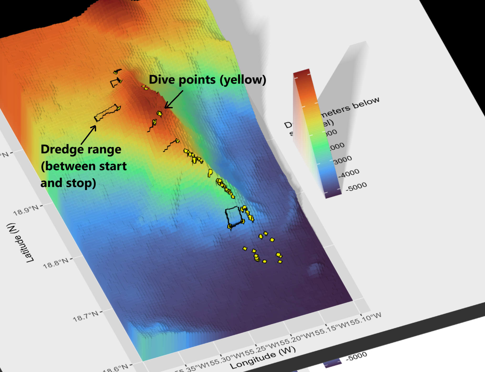

library(devtools)
#devtools::install_github("tylermorganwall/rayshader")
#devtools::install_github("tylermorganwall/rayimage")Use R and rayshader to make a 3-D Bathymetric Map of a Seamount Volcano
1 Summary
This is a tutorial to use R package rayshader in a 3-D mapping workflow to visualize the appearance of an underwater volcano, and collection history of lava samples along the volcano over time. This example…
- Combines multiple visualization types—points, lines, and a 3-D surface—into a single integrated map.
- Uses data compiled from global datasets, primary literature, and shipboard reports, along with ongoing efforts to standardize decades of sample hauls with heterogeneous metadata.
- Illustrates an approach that is transferable beyond underwater or volcanic settings, such as multimodal journey mapping in regions with complex topography.
Jump to Create Maps to skip the data processing part of the tutorial.
1.1 Preview
I focus on Kamaʻehuakanaloa, a volcanic seamount off the coast of the island of Hawaiʻi. This volcano is ~10 km long with a summit ~900 meters below sea level, and the deepest portions extending below 5000 meters below sea level. I use data from GEBCO (General Bathymetric Chart of the Oceans) for the 3-D surface.
Here is a preview of what we will make:

1.2 Credit
Huge thanks to resources and tutorials that I used while writing this tutorial:
- Rayshader website by Tyler Morgan-Wall
- Rayshader + Marmap by Kosmas Hench (even though I did not use marmap here, working through this was useful and I hope to use overlays in future 3D maps)
- I can rayshade, and so can you by wcmbishop
2 Install packages for 3D and movie rendering
Even though these are not used until the very last step of the tutorial, we’ll first load packages useful for image editing and transforming raster to spatial data. Load devtools to download packages from github/developer (recommended).
Uncomment the lines for rayshader and rayimage for your initial install.
For the rest of the tutorial, we will load packages as needed. Install them if you do not have them already.
3 Download and convert bathymetry data
3.1 Download GeoTIFF files
See README.md for this tutorial. I have a couple files downloaded from GEBCO Gridded Bathymetry Data in the “data” folder.
These three files all have the same bounding box (extent):
- gebco24_kamaehu.tif, a GeoTiff file
- gebco_kamaehu_relief.png, a shaded relief image
- gebco24_kamaehu.png, a hillshade colour map
The hillshade and relief are not much to look at (compared to land data). For this tutorial, we will only deal with the GeoTIFF.
We will get information about our raster data before we read that data into R.
Load terra package for the first functions we will use to deal with the .tif file.
library(terra)The describe() function is used to get the properties of spatial data in a file, in this case, a downloaded . Then, we’ll store the output for future reference as gebco24_kamaehu_info
#describe("data/gebco24_kamaehu.tif")
gebco24_kamaehu_info <- capture.output(describe("data/gebco24_kamaehu.tif"))3.2 Convert GeoTIFF to Raster
Use terra function rast() to transform from geofile to raster (SpatRaster)
kamaehu_raster <- terra::rast("data/gebco24_kamaehu.tif")3.3 Convert Raster to Data Frame
Then, convert raster to data frame. Set xy = TRUE to include the coordinates of each raster cell.
kamaehu_raster_df <- as.data.frame(kamaehu_raster, xy = TRUE)View information about coordinate reference system with crs() which is used to get the coordinate reference system. Set proj = TRUE to return crs in PROJ-string notation.
# get info about the coordinate reference system
crs(kamaehu_raster, proj = TRUE, describe = TRUE) name authority code area extent
1 WGS 84 EPSG 4326 World -180, 180, -90, 90
proj
1 +proj=longlat +datum=WGS84 +no_defsWe find out that the datum is WGS84 and projected using longitude and latitude.
Check the range of cell values with terra’s minmax(). Returned empty/no result, so then we use setMinMax() to make the range and store the value. Then, we can check again.
# set if no minmax returns
kamaehu_raster <- setMinMax(kamaehu_raster)
# get min and max values
minmax(kamaehu_raster) gebco24_kamaehu
min -5183
max -820We see that this range for this file is min: -5183, max: -820. These are in meters, by the way!
4 Load data and metadata for sample locations
Load relevant packages to process and load the data.
library(readr)
library(dplyr)
library(tidyverse)Load data and metadata from Truong (2023), aka my dissertation. Use read_csv() to get sample locations. This file has 105 columns but we will use dplyr select() to only keep features related to location or collection. There are two main types of collection we consider here, and this influences the column selection:
Submarine dive (“dive”)1. These are point locations with latitude, longitude, and depth.
Dredge haul (“dredge”)2. These are technically lines but can be considered a point if needed.
Read the csv file, which is compiled literature data from my PhD dissertation.
# read csv file, keep column names
kamaehu_data <- read_csv("data/truong2023_kamaehu_data.csv",
col_names = TRUE) Rows: 64 Columns: 105
── Column specification ────────────────────────────────────────────────────────
Delimiter: ","
chr (14): sample_name, sample_name_ID, sample_name_short, rock_type, rock_ty...
dbl (88): sample_ID, rock_type_ID, x3He_4He_vesicle, x3He_4He_vesicle_2s, x3...
lgl (3): rock_type_flag, depth_calc, lat_lon_calc
ℹ Use `spec()` to retrieve the full column specification for this data.
ℹ Specify the column types or set `show_col_types = FALSE` to quiet this message.Read these columns. We select main metadata, and order them according to what I know which will be 1) dives, 2) dredge starts, and 3) dredge ends. Because I work with depth originally (meters below sea level), I am converting these to elevation, which is the same magnitude but is above sea level. Hence, we convert depth into elevation values (multiply by -1) so that they plot correctly.
kamaehu_locations <- kamaehu_data |>
mutate(elevation_m = depth_m*(-1),
elevation_m_start = depth_m_start*(-1),
elevation_m_end = depth_m_end*(-1)) |>
select(c(sample_ID, sample_name_short,
latitude, longitude, depth_m, elevation_m,
latitude_start, longitude_start,
depth_m_start, elevation_m_start,
latitude_end, longitude_end, depth_m_end,
elevation_m_end,
collection, location, expedition,
collection_type)) 4.1 Subset location data for dives and dredges
kamaehu_locations combines data from multiple collection types. For the purpose of visualizing the actual differences in collection, we will separate into points (dives and dredges).
4.1.1 Dives
These are points with a single collection coordinate (latitude, longitude) and depth because they are collected by a stationery ROV with a robot arm.
kamaehu_locations_dive <- kamaehu_locations |>
filter(collection_type == "dive") |>
select(c(sample_ID, sample_name_short,
latitude, longitude, depth_m, elevation_m,
collection, location, expedition, collection_type))4.1.2 Dredges
Select all the samples with dredge data.
kamaehu_locations_dredge <- kamaehu_locations |>
filter(collection_type == "dredge") |>
select(c(sample_ID, sample_name_short,
latitude_start, longitude_start,
depth_m_start, elevation_m_start,
latitude_end, longitude_end, depth_m_end,
elevation_m_end, collection, location,
expedition, collection_type)) Dredge transects are lines extending from two points: 1) on-bottom 2) off-bottom (or close to it). While the actual dredge track is not a straight line during collection, we will map it as such as an approximation of the transect.
Note: I could most likely filter out start and ends points later in the graph code, however, to minimize issues, I will separate the start and end points into different data sets:
4.1.2.1 Start points
kamaehu_locations_dredge_start <- kamaehu_locations_dredge |>
select(c(sample_ID, sample_name_short,
latitude_start, longitude_start,
depth_m_start, elevation_m_start)) 4.1.2.2 End points
kamaehu_locations_dredge_end <- kamaehu_locations_dredge |>
select(c(sample_ID, sample_name_short,
latitude_end, longitude_end,
depth_m_end, elevation_m_end)) 4.2 Transform dive and dredge data into shapefile objects
Note: From this point forward, there are several instances where I repeat code lines instead of defining functions, because things get weird and broken fast when I’m working with shapefiles or other mapping objects. I haven’t been able to troubleshoot this with seemingly MWEs. For now, my best bet has been to work with individual objects, even if it means repeating code unnecessarily. Once I figure it out, I will update this!
sf objects are shapefiles. To turn these dive and dredge locations into something we can map, we’ll call in the sf package to map the latitude and longitude values.
library(sf)Next, use function st_as_sf() to convert data frame into an sf (shapefile) object. Use coords to indicate names and numbers of numeric columns holding coordinates. coordinate system for both: x = longitude, y = latitude.
Make sf objects, set coordinate reference system (CRS) for dive and dredge samples. In this case, I am using WGS 84 (EPSG 4326). For your own data, you may work with a different datum depending on your region of focus or data source.
4.2.1 Dives
kamaehu_locations_dive_sf <- st_as_sf(kamaehu_locations_dive,
coords = c("longitude","latitude"),
crs = "EPSG:4326")Uncomment the below code to check the crs before or after to see if needed
#crs(kamaehu_locations_dive_sf)4.2.2 Dredges
Make sf objects, set crs for both dredge start and end points.
4.2.2.1 Start points
kamaehu_locations_dredge_start_sf <- st_as_sf(kamaehu_locations_dredge,
coords = c("longitude_start", "latitude_start"),
crs = "EPSG:4326") 4.2.2.2 End points
kamaehu_locations_dredge_end_sf <- st_as_sf(kamaehu_locations_dredge,
coords = c("longitude_end", "latitude_end"),
crs = "EPSG:4326") 5 Create other geospatial objects
Load other helpful spatial packages because you’ll need it soon.
library(sp)
library(raster)
library(ggplot2)5.1 Contour lines
Going back to terra package to get contour lines from the raster we made, called kamaehu_raster.
Make contour from terra’s rast() not raster’s raster().
kamaehu_r <- terra::rast("data/gebco24_kamaehu.tif")Define contour levels (number of levels), make contour, then convert to sf object, then transform with the correct coordinate system. Not sure why I have both raster files kamaehu_r and kamaehu_raster but it’s not letting me get rid of the former.
k_4_cr <- terra::as.contour(kamaehu_r,
#1000-m increments when nlevels = 4
nlevels = 4)
# change from SpatVector to sf object, set coordinates
k_4_cr_sf <- sf::st_as_sf(k_4_cr,
crs = crs(kamaehu_raster))you can make a test plot with ggplot(k_[#]_lines) + geom_sf()
ggplot(k_4_cr_sf) +
geom_sf()
An earlier rendition of this notebook indicated that contour lines bleed over into the edges of the 3D object in a rather ugly way, specifically on the top (North) and right (East) axes.

I want to avoid black contour lines reaching the edges of the 3D shape. So, I want to limit contours to a region that is slightly smaller than the original bounding box, specifically with xmax (longitude max), and ymax (latitude max). I need to define a new bounding box and crop the contour lines to that box, while leaving everything else relatively the same.
5.2 Bounding box for a cropped region to display
This step will make the edges of the 3-D white, instead of what is seen above. If you do not mind the edges, then just make sure the contour object you map is the original one, k_4_cr_sf.
Get original extent from the raster package. Record the vector into 4 variables for xmin, xmax, ymin, ymax. It is VERY easy for me to confuse myself among naming them as latitude vs. longitude and min vs. max, so I have to check this a couple times to verify.
#check to make sure it as WGS84...
crs(kamaehu_r) <- "EPSG:4326"
#define original raster data frame to get extent
orig_raster <- as.data.frame(kamaehu_r, xy = TRUE)
orig_bbox <- c("xmin_orig", "xmax_orig", "ymin_orig", "ymax_orig")
#then assign extent(orig_raster[1:4] to the orig_bbox vector...
#define original bounding box coordinates
xmin_orig <- extent(orig_raster)[1]
xmax_orig <- extent(orig_raster)[2]
ymin_orig <- extent(orig_raster)[3]
ymax_orig <- extent(orig_raster)[4]Define a new bounding box and set a custom amount to remove on each edge. I just set them all the same because I am lazy (even though I know I am technically taking more of longitude than latitude). Use the convert_coords() function to define a new cropped bounding box, which keeps the crs. I found the function online but did not document the source (apologies!)
#set absolute amount to remove on crop on all sides
crop_dif <- 0.0005
# Crop to fit desired box for crop
lat_range <- c(ymin_orig, ymax_orig-crop_dif)
long_range <- c(xmin_orig, xmax_orig-crop_dif)
#credit whoever made this function please
convert_coords <- function(lat, long, from = CRS("+init=epsg:4326"), to) {
data = data.frame(long = long, lat = lat)
sp::coordinates(data) <- ~ long + lat
sp::proj4string(data) = from
# Convert to coordinate system specified by EPSG code
xy = data.frame(sp::spTransform(data, to))
colnames(xy) = c("x","y")
return(unlist(xy))
}
crop_bbox <- convert_coords(lat = lat_range,
long = long_range,
to = CRS("+init=epsg:4326"))Warning in CPL_crs_from_input(x): GDAL Message 1: +init=epsg:XXXX syntax is
deprecated. It might return a CRS with a non-EPSG compliant axis order.#get new, zoomed extent with cropped bounding box
extent_zoomed <- raster::extent(crop_bbox[1], crop_bbox[2],
crop_bbox[3], crop_bbox[4])
#make new raster of zoomed area
kamaehu_zoom_raster <- raster::crop(kamaehu_raster, extent_zoomed)
# make new matrix of zoomed aea
kamaehu_zoom_matrix <- rayshader::raster_to_matrix(kamaehu_zoom_raster)
# make new data frame of zoomed area
kamaehu_zoom_df <- as.data.frame(kamaehu_zoom_matrix, xy = TRUE)Finally, we generate contours the same way we did before, with the as.contour() function on the new raster file. Remember to add the word “zoom” to the variable names to avoid using the old information.
#1000-m increments, 5100-800 = 4300/4 = 1000
k_4_zoom_cr <- terra::as.contour(kamaehu_zoom_raster, nlevels = 4) #1000-m increments
# change from SpatVector to sf object, set coordinates
k_4_zoom_cr_sf <- sf::st_as_sf(k_4_zoom_cr,
crs = crs(kamaehu_zoom_raster))Now, we make a quick plot that shows the extent of the old bounding box (blue) and zoom/cropped region (red).
#contour_zoom_diff_gg <-
ggplot() +
geom_sf(data = k_4_cr_sf,
colour = "blue") +
geom_sf(data = k_4_zoom_cr_sf,
colour = "red") +
labs(
title = "Change from crop diff: ",
subtitle = crop_dif,
caption = "Blue is original extent, \n red is cropped extent"
)
Woohoo! Now, I proceed with making a bunch of contour lines again.
#100-m increments, 5100-800 = 4300/43 = 100
k_43_zoom_cr <- terra::as.contour(kamaehu_zoom_raster,
nlevels = 43) #100-m increments
# change from SpatVector to sf object, set coordinates
k_43_zoom_cr_sf <- sf::st_as_sf(k_43_zoom_cr,
crs = crs(kamaehu_zoom_raster))6 Create Maps
First, load the rayshader package (installed in the first step), and the av package (used to make movies).
library(rayshader)
library(av)Finally, we’re here.
6.1 Map 1: Classic Bathymetry (2-D)
Make quick ggplot, aka quick_gg (I’m annoyed by my naming choices, too). Note that in geom_raster(), the fill is the 3rd value of the raster file, aka height. I chose the turbo scale color option because it is the closest to the color scale options from the literature about this volcano.
quick_gg <- ggplot() +
geom_raster(data = kamaehu_raster_df ,
aes(x = x,
y = y,
fill = gebco24_kamaehu),
interpolate = TRUE) +
scale_fill_viridis_c(option = "turbo",
alpha = 1,
begin = 0.1,
end = 0.9,) +
#breaks = seq(from = -155.4, to = -155, by = 0.1)
scale_x_continuous(breaks = c(-155.4,-155.3,-155.2,-155.1, -155)) +
# plot 1000-m contour
geom_sf(data = k_4_zoom_cr_sf,
linewidth = 0.4,
alpha = 0.6) +
# plot 100-m contour
geom_sf(data = k_43_zoom_cr_sf,
linewidth = 0.15,
alpha = 0.6) +
# plot dive locations as filled circles
geom_sf(data = kamaehu_locations_dive_sf,
size = 1.5,
shape = 23,
fill = "yellow") +
# plot dredge segments as straight lines even though they're not
geom_segment(data = kamaehu_locations_dredge,
aes(x = longitude_start,
xend = longitude_end,
y = latitude_start,
yend = latitude_end),
colour = "black",
linewidth = 0.5) +
# plot dredge start and end symbols as x
geom_sf(data = kamaehu_locations_dredge_start_sf,
size = 1.5,
shape = 4,
colour = "black") +
geom_sf(data = kamaehu_locations_dredge_end_sf,
size = 1,
shape = 4,
colour = "black") +
# use coordinate system 4326
coord_sf(default_crs = sf::st_crs(4326)) +
# set theme appearance
theme(panel.background = element_rect(fill = "white", color = "white"),
legend.box.just = "right",
plot.title = element_text(size = rel(1.25)),
plot.subtitle = element_text(size = rel(0.6)),
title = element_text(size = rel(1.25))) +
# set axes and titles
labs(fill = "Depth (mbsl, \nmeters below \nsea level) \n",
x = "Longitude",
y = "Latitude",
title = "Selected dive and dredge sample locations, \nKamaʻehuakanaloa Seamount, Hawaiʻi \n",
subtitle = "Data sources: GEBCO 2024 Bathymetry grid, CRS = 4324, Moore et al., (1982), \nScripps Geological Data Center, JAMSTEC, Valbracht (1997), Garcia et al., unpublished \n \n")
quick_gg
6.2 Map 2: Rayshader 3-dimensional
The av package is used for the function render_movie() here. View with rayshader plot_gg(). Save snapshot and video.
plot_gg(quick_gg,
multicore = TRUE, offset_edges = TRUE, raytrace = TRUE,
width = 6, height = 9, scale = 300,
windowsize = c(1400, 1000),
fov = 0, theta = 45, phi = 60, zoom = 0.7,
lambert = TRUE, shadow = FALSE, background = "black",
sunangle = 225)
render_snapshot()
# save as a png
render_snapshot(filename = "outputs/image/kamaehu_bathymetry_contours.png")
# save as a video with 360 rotation
render_movie(filename = "outputs/video/kamaehu_bathymetry_contours.mp4")[1] "C:\\Users\\Thi\\Documents\\Work PC Thi\\Documents\\R Learning\\rayshader-demo\\kamaehu_tutorial\\outputs\\video\\kamaehu_bathymetry_contours.mp4"6.2.1 Animation
This is what a typical movie looks like, in gif form:

6.2.2 Comparison: Before and After Interpolation
When creating Map 1, in geom_raster() we specify interpolate = TRUE. The below screenshot shows an earlier version when I had not yet interpolated the surface values. Notice the blocky texture here. Here, I also plotted dredge tracks as rectangles (more like ranges instead of tracks). I am not sure yet if that is more useful or not.

7 Closing Out
7.1 Resources
See README.md for this tutorial.
Again, could not have wrote this without resources made by these folks:
- Rayshader website by Tyler Morgan-Wall
- Rayshader + Marmap by Kosmas Hench (even though I did not use marmap here, working through this was useful and I hope to use overlays in future 3D maps)
- I can rayshade, and so can you by wcmbishop
Dissertation: Revisiting Lōʻihi: Geochemistry of Kamaʻehuakanaloa Lavas Reveals Complexities in the Pre-Shield to Shield Transition and Hawaiian Mantle Plume Source (Appendix tables contain the location metadata)
7.2 Run Information
This was ran in RStudio and documented on a Quarto (.qmd) file in January 2026.
Version information:
RStudio 2025.09.2+418 “Cucumberleaf Sunflower” Release (12f6d5e22720bd78dbd926bb344efe12d0dce83d, 2025-10-20) for windows Mozilla/5.0 (Windows NT 10.0; Win64; x64) AppleWebKit/537.36 (KHTML, like Gecko) RStudio/2025.09.2+418 Chrome/138.0.7204.251 Electron/37.6.1 Safari/537.36, Quarto 1.7.32
Quarto enables you to weave together content and executable code into a finished document. To learn more about Quarto see https://quarto.org.
7.3 Forthcoming Improvements and Ideas
- Write reusable functions to reduce repetitive code and improve maintainability.
- Map an example with elevation and a different datum, e.g. NAD83
- Make a Reprex example with considerations for downloading from databases like GEBCO
Footnotes
Dives are insanely convenient. Well documented. Known depth, coordinates, even pictures/videos of the sites and exact collection, thanks to our robot friends. Highly precise, rewarding, but relatively little payload by volume and for the given time.↩︎
Dredge hauls may be the bane of a precise mapper’s existence. Dredge hauls are chain metal buckets dropped by a ship at the ocean bottom, which are dragged along a path along the ocean floor, picking up rocks until it is retrieved again. There are typically “start” and “stop” locations, but the rocks are collected between those moments. When I aggregate data, I still aim to preserve information about the whole dredge track.↩︎